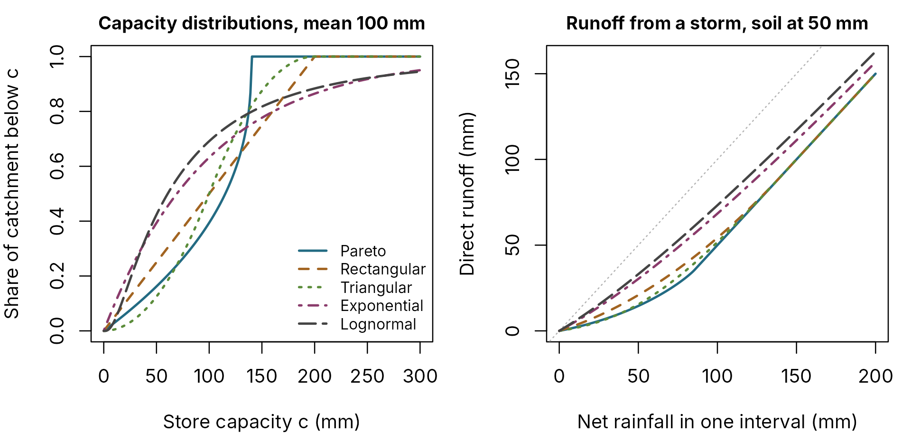
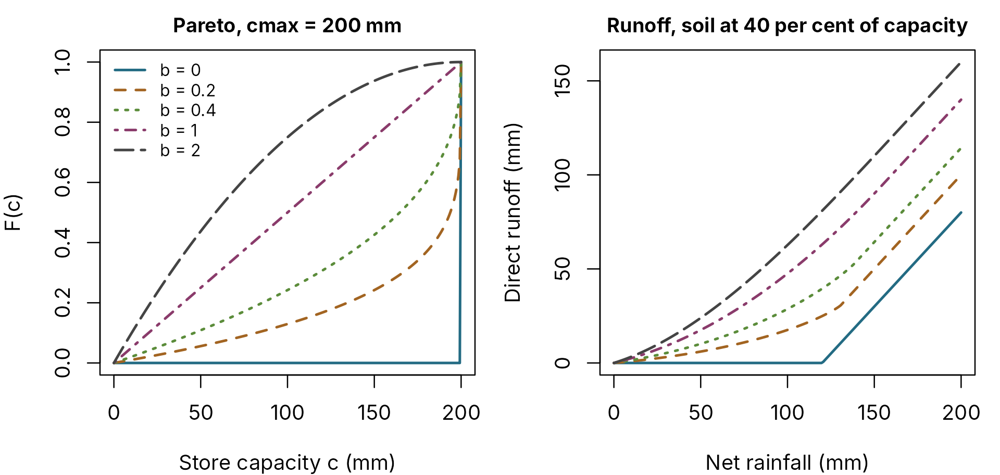
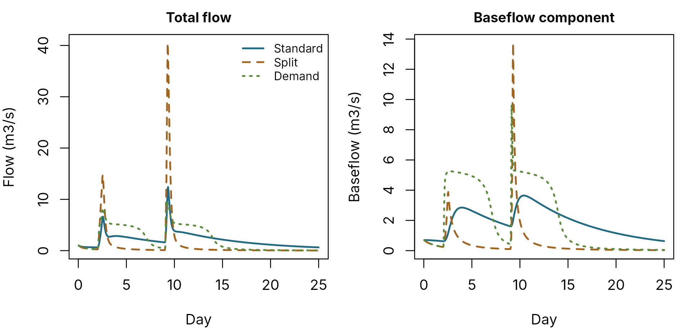
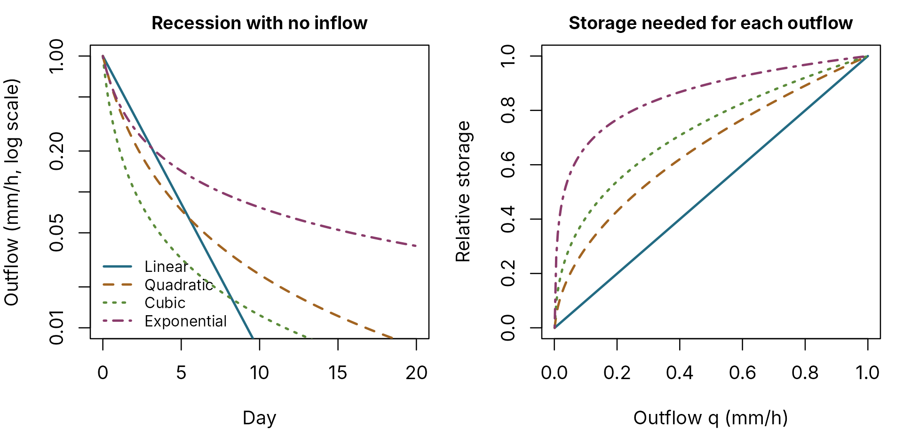
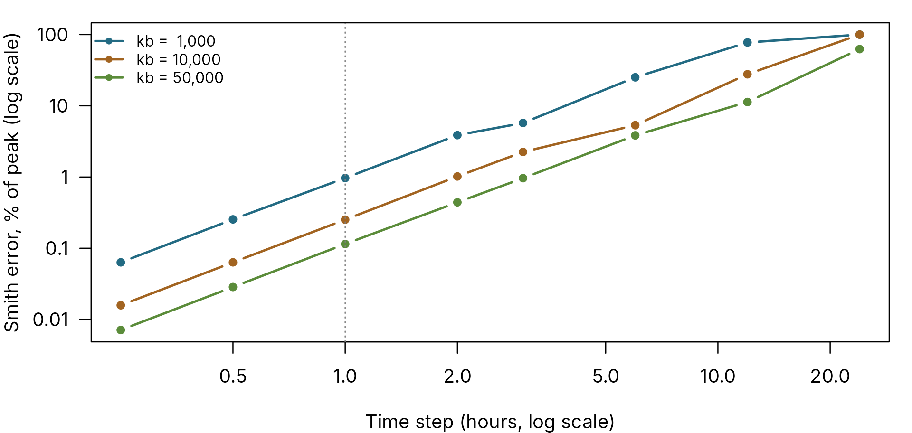

PDM is a family of models, not one model. You choose a capacity distribution for the soil store, a recharge rule that moves water to groundwater, and a routing form for each of the surface and groundwater paths. This article shows how each choice behaves, so the choice can rest on catchment behaviour rather than habit. PDM explained gives the equations; this article gives the consequences.
The default, pdm_presets("standard"), is the
configuration Moore (2007) describes as most widely used: a Pareto
distribution, standard recharge, a two-store surface cascade and a cubic
groundwater store. Start there and change one component at a time.
| Component | Options | Default |
|---|---|---|
| Capacity distribution | Pareto, rectangular, exponential, triangular, lognormal | Pareto, b = 0.4 |
| Recharge | Standard, split, demand | Standard |
| Surface routing | Cascade of two linear stores, power-law store, exponential store | Cascade |
| Groundwater routing | Power-law store (linear, quadratic, cubic or any exponent), exponential store, cascade | Cubic |
| Groundwater solver | Adaptive Runge-Kutta, Smith approximation | Adaptive |
The soil store: how fast does the catchment saturate?
The capacity distribution describes how storage capacity varies across the catchment. Its shape decides how quickly the catchment starts producing runoff as it wets up. The five families below all have a mean capacity of 100 mm, so they hold the same water when full; they differ in how that capacity is spread.
dists <- list(
Pareto = FlodeParetoCapacity(0, 140, 0.4),
Rectangular = FlodeRectangularCapacity(0, 200),
Triangular = FlodeTriangularCapacity(0, 200),
Exponential = FlodeExponentialCapacity(100),
Lognormal = FlodeLognormalCapacity(log(100) - 0.5, 1)
)
cc <- seq(0, 300, length.out = 400)
net <- seq(0, 200, length.out = 200)
two_panels()
plot(NA, xlim = c(0, 300), ylim = c(0, 1), xlab = "Store capacity c (mm)",
ylab = "Share of catchment below c", main = "Capacity distributions, mean 100 mm")
for (i in seq_along(dists)) {
lines(cc, capacity_cdf(dists[[i]], cc), col = pal[i], lwd = 2, lty = i)
}
legend("bottomright", names(dists), col = pal, lty = 1:5, lwd = 2, bty = "n", cex = 0.8)
plot(NA, xlim = c(0, 200), ylim = c(0, 160), xlab = "Net rainfall in one interval (mm)",
ylab = "Direct runoff (mm)", main = "Runoff from a storm, soil at 50 mm")
abline(0, 1, col = "grey70", lty = 3)
for (i in seq_along(dists)) {
runoff <- vapply(net, function(p) soil_step(dists[[i]], 50, p)$runoff, numeric(1))
lines(net, runoff, col = pal[i], lwd = 2, lty = i)
}
Left: the share of the catchment whose stores hold less than c. Right: direct runoff from one interval’s net rainfall, with the soil store starting at 50 mm. The dotted line is runoff equal to rainfall.
The bounded families (Pareto, rectangular, triangular) have a largest store, so a big enough storm fills the catchment and every further millimetre runs off: the runoff line becomes parallel to the dotted line. The unbounded families (exponential, lognormal) always keep some deep stores unfilled, so they produce runoff earlier from small storms but never quite reach full saturation.
The Pareto shape parameter
Within the Pareto family, the exponent b is usually the
most informative parameter to calibrate. With b = 0 every
store has the same capacity, so nothing runs off until the whole
catchment is full. Larger values add more shallow stores, which produce
runoff early.
bs <- c(0, 0.2, 0.4, 1, 2)
two_panels()
plot(NA, xlim = c(0, 200), ylim = c(0, 1), xlab = "Store capacity c (mm)", ylab = "F(c)",
main = "Pareto, cmax = 200 mm")
for (i in seq_along(bs)) {
lines(cc[cc <= 200], capacity_cdf(FlodeParetoCapacity(0, 200, bs[i]), cc[cc <= 200]),
col = pal[i], lwd = 2, lty = i)
}
legend("topleft", paste("b =", bs), col = pal, lty = 1:5, lwd = 2, bty = "n", cex = 0.8)
plot(NA, xlim = c(0, 200), ylim = c(0, 160), xlab = "Net rainfall (mm)",
ylab = "Direct runoff (mm)", main = "Runoff, soil at 40 per cent of capacity")
for (i in seq_along(bs)) {
d <- FlodeParetoCapacity(0, 200, bs[i])
start <- 0.4 * capacity_mean(d)
runoff <- vapply(net, function(p) soil_step(d, start, p)$runoff, numeric(1))
lines(net, runoff, col = pal[i], lwd = 2, lty = i)
}
Pareto distributions with cmax = 200 mm. Right: runoff with the soil store starting at 40 per cent of its capacity.
A rule of thumb: flashy, thin-soiled catchments suit larger
b; permeable catchments that absorb small storms suit
smaller b. Calibration should decide, but the plot shows
why b and cmax trade off against each
other.
Recharge: how water reaches groundwater
The three recharge rules produce very different baseflow from the same storms. The models below differ only in recharge, and each starts in steady state with the same observed flow (see Starting a run), so the comparison is fair from the first hour.
n <- 24 * 25
rain <- rep(0, n)
rain[24 * 2 + 1:12] <- 4
rain[24 * 9 + 1:6] <- 8
forcing <- data.frame(rain = rain, pet = 0.05)
days <- seq_len(n) / 24
recharge <- list(
Standard = FlodeStandardRecharge(kg = 200, bg = 1, st = 0),
Split = FlodeSplitRecharge(alpha = 0.6),
Demand = FlodeDemandRecharge(alpha = 0.5, beta = 1.5, qsat = 0.4)
)
runs <- lapply(recharge, function(r) {
model <- pdm_model(recharge = r, groundwater = cubic_routing(kb = 2000), area_km2 = 50)
state <- initial_state_from_flow(model, observed_m3s = 1, baseflow_fraction = 0.7,
soil_fraction = 0.6)
run_pdm(model, forcing, state)$output
})
two_panels()
plot(NA, xlim = range(days), ylim = c(0, max(sapply(runs, function(o) max(o$q_m3s)))),
xlab = "Day", ylab = "Flow (m3/s)", main = "Total flow")
for (i in seq_along(runs)) lines(days, runs[[i]]$q_m3s, col = pal[i], lwd = 2, lty = i)
legend("topright", names(runs), col = pal, lty = 1:3, lwd = 2, bty = "n", cex = 0.8)
baseflow <- lapply(runs, function(o) o$baseflow_out_mm * 50 / 3.6)
plot(NA, xlim = range(days), ylim = c(0, max(unlist(baseflow))), xlab = "Day",
ylab = "Baseflow (m3/s)", main = "Baseflow component")
for (i in seq_along(runs)) lines(days, baseflow[[i]], col = pal[i], lwd = 2, lty = i)
Two storms over 25 days, hourly steps. Left: total flow. Right: the baseflow component alone.
- Standard recharge drains the soil store in proportion to its storage above a tension threshold. It gives smooth, sustained baseflow: the usual choice.
- Split recharge sends a fixed share of direct runoff to groundwater and nothing from the soil store itself. Baseflow rises and falls with each storm, so recessions are short. It suits catchments with little groundwater.
-
Demand recharge depends on how much the groundwater
store can take. When groundwater is low the soil drains fast, at up to
qsat, which gives the plateau; once groundwater fills, recharge falls back. Its behaviour depends strongly on the time step, so check results at more than one step before relying on it.
Routing: the shape of the recession
Each routing store turns its inflow into outflow through a storage-discharge relationship. The relationship sets the shape of the recession once rain stops.
routes <- list(
Linear = linear_routing(48), Quadratic = quadratic_routing(2000),
Cubic = cubic_routing(20000), Exponential = FlodeExponentialRouting(0.05, -2)
)
hours <- 0:(24 * 20)
two_panels()
plot(NA, xlim = c(0, 20), ylim = c(0.01, 1), log = "y", xlab = "Day",
ylab = "Outflow (mm/h, log scale)", main = "Recession with no inflow")
for (i in seq_along(routes)) {
r <- routes[[i]]
storage <- storage_for_flow(r, 1)
q <- numeric(length(hours))
q[1] <- 1
for (h in 2:length(hours)) {
step <- route_step(r, storage, 0, 1)
storage <- step$storage
q[h] <- step$q_end
}
lines(hours / 24, q, col = pal[i], lwd = 2, lty = i)
}
legend("bottomleft", names(routes), col = pal, lty = 1:4, lwd = 2, bty = "n", cex = 0.8)
qq <- seq(0.001, 1, length.out = 200)
plot(NA, xlim = c(0, 1), ylim = c(0, 1), xlab = "Outflow q (mm/h)",
ylab = "Relative storage", main = "Storage needed for each outflow")
for (i in seq_along(routes)) {
r <- routes[[i]]
low <- storage_for_flow(r, 0.001)
high <- storage_for_flow(r, 1)
lines(qq, (storage_for_flow(r, qq) - low) / (high - low), col = pal[i], lwd = 2, lty = i)
}
Left: recessions from an outflow of 1 mm/h with no further inflow, on a log scale. Right: the storage needed for each outflow, scaled so that storage at 1 mm/h is 1.
A linear store recedes exponentially, which is a straight line on the log scale. Nonlinear stores recede fast at high flow and slowly at low flow, which matches most observed baseflow: that is why Moore recommends the cubic store for groundwater. The exponential store has the longest tail of the four, for catchments whose baseflow persists through long dry spells.
The surface path normally uses the cascade of two linear stores,
which shapes the storm hydrograph’s rise and fall with two time
constants, k1 and k2. Either path can use any
of the routing forms.
Groundwater solver: adaptive or Smith
The cubic store can be solved two ways. The adaptive solver integrates the store equation to a tight tolerance. The Smith solver uses a closed-form approximation from Moore (2007), Eq. 24, which is slightly faster but loses accuracy as the time step grows.
set.seed(1)
n15 <- 96 * 60
rain15 <- ifelse(stats::runif(n15) < 0.08, stats::rgamma(n15, 0.7, scale = 1), 0)
steps <- c(0.25, 0.5, 1, 2, 3, 6, 12, 24)
aggregate_steps <- function(x, k) colSums(matrix(x[seq_len(floor(length(x) / k) * k)], k))
smith_error <- function(kb) {
vapply(steps, function(dt) {
k <- dt / 0.25
f <- data.frame(rain = aggregate_steps(rain15, k), pet = 0.02 * k)
build <- function(solver, rtol = 1e-8) {
suppressWarnings(pdm_model(area_km2 = 50, dt = dt, groundwater = power_routing(
k = 1 / kb, m = 3, solver = solver, rtol = rtol, atol = 1e-12
)))
}
ref <- run_pdm(build("adaptive", 1e-12), f)$output$q_m3s
smith <- run_pdm(build("smith"), f)$output$q_m3s
100 * max(abs(smith - ref)) / max(ref)
}, numeric(1))
}
kbs <- c(1000, 10000, 50000)
errors <- sapply(kbs, smith_error)
par(mar = c(4, 4, 1, 1))
matplot(steps, errors, type = "b", log = "xy", pch = 16, lty = 1, lwd = 2, col = pal[1:3],
xlab = "Time step (hours, log scale)", ylab = "Smith error, % of peak (log scale)",
yaxt = "n")
axis(2, at = c(0.01, 0.1, 1, 10, 100), labels = c("0.01", "0.1", "1", "10", "100"), las = 1)
abline(v = 1, lty = 3, col = "grey50")
legend("topleft", paste("kb =", format(kbs, big.mark = ",")), col = pal[1:3], lwd = 2,
pch = 16, bty = "n", cex = 0.8)
Largest flow error of the Smith solver, as a percentage of peak flow, against the time step. Errors are measured against the adaptive solver with a very tight tolerance, on 60 days of synthetic forcing.
The error grows roughly with the square of the step. Up to a 1-hour
step it stays near or below 1 per cent of peak flow, so
pdm_model() warns once per session if Smith is used with a
longer step. Use the adaptive solver, the default, unless you need the
last quarter of speed at a 15-minute step.
Snow
In catchments where snow matters, the PACK snowpack runs before PDM and passes on the rain and melt that leave the pack. See PACK snowpack explained.
Source
Moore, R. J. (2007). The PDM rainfall-runoff model. Hydrology and Earth System Sciences 11, 483-499. https://doi.org/10.5194/hess-11-483-2007